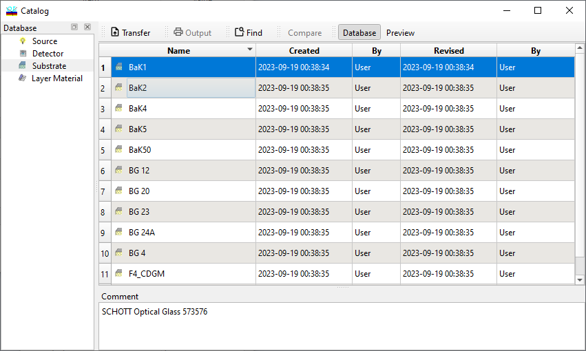

Catalog
Catalog
Navigation: OptiLayer Menu Commands > File Menu >
Catalog
` <layouts.html>`__ ` <idh_menu_file.html>`__ ` <refractiveindex_info_database.html>`__
The current version of OptiLayer features four catalogs: Light Source, Detector, Substrate, and Layer Material. The Light Source catalog includes data on commonly used light sources in colorimetry.
The Detector catalog includes data on the spectral luminous efficiencies of the human eye.
The Layer Material catalog includes information on popular materials used in coatings production.
The Substrate catalog includes several sub-catalogs, such as:
Schott glass catalog
Hoya catalog
Ohara catalog
Ohara Low Tg catalog
Sumita catalog
Hikari catalog
CDGM catalog
Data on Metals
Misc: data files that do not belong to any other sub-catalog.
To select a sub-catalog, use the Database combo box at the top of the Catalog dialog. Changing this combo box will display only the selected subset of data files in the catalog.

The Find command in OptiLayer activates the search feature, simplifying the selection of files using a search pattern. You have the ability to transfer multiple Catalog files at once. To do this, you can select multiple files using the mouse while holding down the Ctrl or Shift keys for various multi-select options, similar to other Windows programs. Once the files are selected in the Catalog dialog, press the Transfer button to complete the transfer operation.
In OptiLayer, the User has the ability to preview the selected file in the directory. To open the preview window, click the “Preview” button (highlighted with a red frame). The user can place this window as desired. Additionally, the User has the ability to compare several files with each other. To do this, select multiple files and click the “Compare” button (highlighted with a red frame).
As a result, a separate window will open, containing several tabs where the comparison will be displayed:
Re(n) - On this tab, the user will be able to compare the refractive index.
Im(n) - On this tab, the user will be able to compare the extinction coefficient.
The selected files will be placed into the current Problem Directory in OptiLayer.